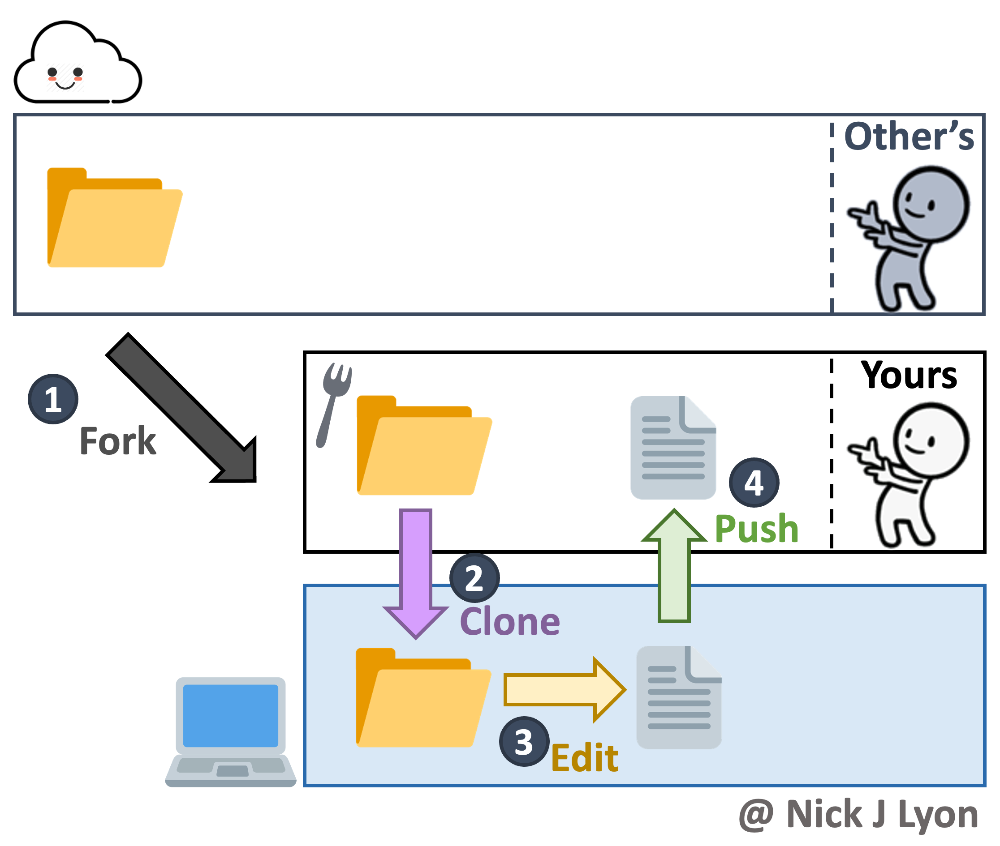

Forks
What is a Fork?
A fork is a duplicate of a git repository that is owned by someone other than you. Any repository that you can view on GitHub, you can fork. Forks allow you to start with a complete repository and then edit it for your own use as needed.
The difference between forks and branches is a source of great confusion for many (even veteran!) git users but hopefully this list helps to clarify:
A fork creates a new repository while a branch exists within a given repository
A fork is owned by a different user/organization than the original, a branch does not change repository ownership
A fork’s “parent” repository is not recognized by
gitbutgitdoes ‘know’ which branch a given branch originates from.
Choosing Whether to Fork or to Branch
A good rule of thumb for whether you should fork or branch a repository is based on whether you’re working independently from the owner of the repository versus collaborating actively with them.
If you are largely independent from the repository’s owner, fork that repository to get your own copy to independently work in. If you are actively collaborating, it is likely that you’ll want to work in a branch.
It is important to note that both forks and branches can be merged back into their source (the “main” branch for branches and the original repository for forks) via pull request so you need not worry that choosing one or the other will preclude integration with the source.
Brief Overview of Fork Workflow
Forking is (arguably) one of the more straightforward git workflows but before we cover it in detail, let’s review the broader context.
You begin by going to the GitHub page for a repository that you do not own. From there, there is a convenient “Fork” button you can click that (after a screen very much like that of creating a new repository) creates a duplicate of the repository in your profile’s repository list.
Once the fork is created, you simply clone the repository as you would when beginning work with any other GitHub repository.
From there on you work as your normally would with GitHub: edit, commit, pull, and push.
While it is not shown in the below diagram, if needed you can submit a “pull request” (see Appendix B: Branches) to merge your version of the repository with the version you initially forked from. This is not a required part of the workflow which is why it is excluded from the diagram.

Now we’ve covered the general operation of forking, let’s go over the specifics step-by-step.
Create a Fork
On GitHub, navigate to the repository that you would like to fork for your own use. Note that in this case the repository we created to take these screen captures is very new but this need not be the case!
In the top right of the repository’s GitHub page there is a “Fork” button (between “Unwatch” and “Star”), click it to begin forking.

This redirects you to a page that is very similar to the page for creating a new repository de novo (see Chapter 3: Using GitHub).
Here you can select who you want to own the repository from a dropdown including any organizations you are a member of and your username if you want to personally own the fork.
You can also change the repository name (though the default is to retain the same name) and add a description of your purpose for the fork.
You may notice that in this page you do not have the option to specify public versus private or any of the ‘initialize’ steps (e.g., README, gitignore, or licence). Forks will inherit these settings from the repository they are forked from so they do not need to specified here.
Once you are happy with the owner of the fork, the name, and the description, click the green “Create fork” button.

Depending on the amount of content in the repository you are forking and your internet speed this may take anywhere from a few seconds to 1-2 minutes so you will need to wait for a moment while GitHub creates a new duplicate repository under the control of the owner you specified.
After the process completes the page will refresh and you will find yourself on the landing page for your new forked repository!

This repository has a fork icon in the top left (to the left of the owner/repository name) and includes a link to the repository that it came from just beneath that.
The other salient difference is that between the branch and “Code” buttons and the list of files there is a bar that indicates whether the fork is up to date with the repository it was forked from.
If the “parent” repository is updated (i.e., someone pushes changes to it after you forked) you can click the “Fetch upstream” button to integrate those changes with your fork.
If you decide that your changes are a meaningful improvement that the parent repository could benefit from, you can click the “Contribute” button to begin the process of submitting a pull request to integrate your edits with the parent (see Appendix B: Branches for instructions on submitting a pull request).
From here on you can work within your fork as you would within any other repository! Clone the fork into your local computer and work as you normally would (see Chapter 4: Using GitHub via RStudio for a refresher on that workflow if needed)